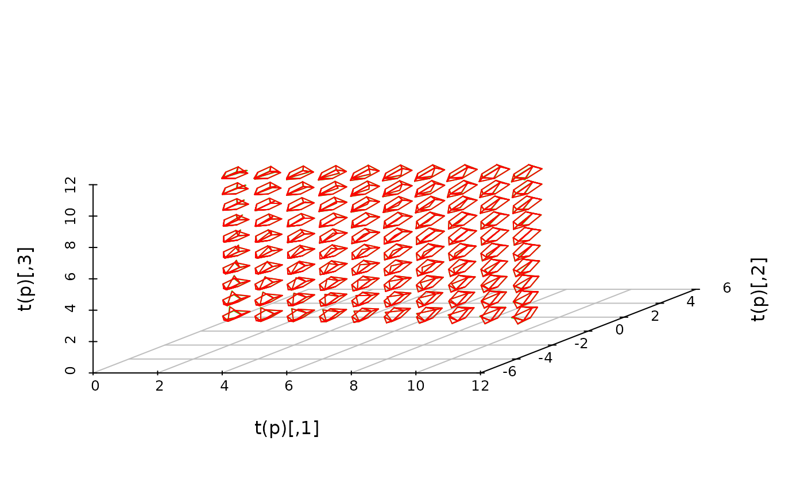

Linear models for orientation data
orientlm.RdRegression models for matched pairs of orientations.
Arguments
- observed
Observed orientations
- leftformula
Formula for ``left'' model (see below)
- trueorient
``True'' orientation (see below)
- rightformula
Formula for ``right'' model (see below)
- data
Optional data frame for predictors in linear model
- subset
Optional logical vector indicating subset of data
- weights
Optional weights
- na.action
Optional NA function for predictors
- iterations
How many iterations to use. Ignored unless both
leftformulaandrightformulaare specified.
Details
The Prentice (1989) model for matched pairs of orientations was
$$E(V_i) = k A_1^t U_i A_2$$
where \(V_i\) is the observed orientation, \(A_1\) and \(A_2\) are orientation matrices, and \(U_i\) is the ``true'' orientation, and \(k\) is a constant. It was assumed that errors were symmetrically distributed about the identity matrix.
This function generalizes this model, allowing \(A_1\) and \(A_2\) to depend on
regressor variables through leftformula and rightformula respectively.
These formulas should include the predictor variables (right hand side) only, e.g. use
~ x + y + z rather than response ~ x + y + z. Specify the response using
the observed argument. If
both formulas are ~ 1, i.e. intercepts only, then Prentice's original model is
recovered. More general models are fit by coordinatewise linear regression in the rotmatrix
representation of the orientation, with fitted values projected onto SO(3) using the
nearest.SO3 function.
When both left and right models are given, Prentice's iterative approach is used with a fixed number of iterations. Note that Shin (1999) found that Prentice's scheme sometimes fails to find the global minimum; this function presumably suffers from the same failing.
References
Prentice, M.J. (1989). Spherical regression on matched pairs of orientation statistics. JRSS B 51, 241-248.
Shin, H.S.H. (1999). Experimental Design for Orientation Models. PhD thesis, Queen's University.
Examples
x <- rep(1:10,10)
y <- rep(1:10,each=10)
A1 <- skewvector(cbind(x/10,y/10,rep(0,100)))
A2 <- skewvector(c(1,1,1))
trueorientation <- skewvector(matrix(rnorm(300),100))
noise <- skewvector(matrix(rnorm(300)/10,100))
obs <- t(A1) %*% trueorientation %*% A2 %*% noise
fit <- orientlm(obs, ~ x + y, trueorientation, ~ 1)
context <- boat3d(A1, x, z=y, col = 'green', graphics='scatterplot3d')
boat3d(fit$A1, x, z=y, add=context)
